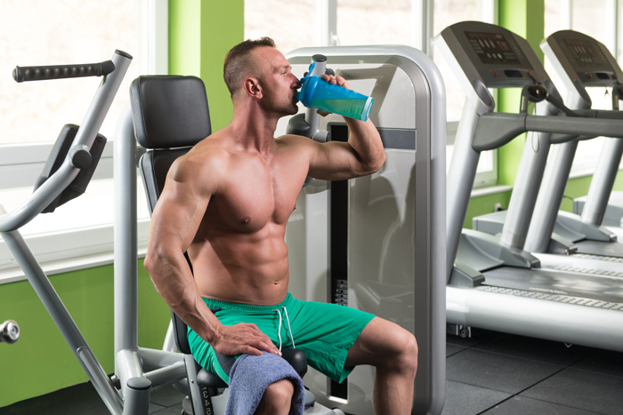

Kemi A
Digital eksamensopgave med adgang til internettet
kl. 09.00-14.00
Vejledning
Prøven
Opgavesættet består af 4 opgaver med i alt 16 delopgaver.
Alle hjælpemidler er tilladt.
Opgavebesvarelsen
Din opgavebesvarelse skal afleveres i et samlet dokument.
Kildehenvisning
Du skal angive kildehenvisning til informationer, data for kemiske forbindelser og lignende, som ikke er givet i opgaveteksten. Benytter du samme kilde i hovedparten af opgavebesvarelsen, kan du angive en generel kildehenvisning i opgavebesvarelsen. Du skal fortsat henvise til andre benyttede kilder.
Bedømmelse
Ved bedømmelsen af din besvarelse lægges vægt på, at du er i stand til at anvende din kemiske viden på nye problemstillinger, og at din besvarelse er ledsaget af
| - | forklarende tekst | |
| - | reaktionsskemaer | |
| - | beregninger | |
| - | figurer og | |
| - | kemiske formler |
I bedømmelsen vægtes alle delopgaver ens.
Der gives én karakter på baggrund af en helhedsbedømmelse.
Opgave 1: Aromastoffer i oregano
|
Oregano er en krydderurt, som anvendes i madlavning, fx som krydderi på pizzaer. Ekstrakter af oregano anvendes også som naturmedicin til behandling af luftvejssygdomme og urinvejsinfektioner og mod menstruationssmerter. Oreganoolie er bakteriedræbende og har antioxidativ virkning, og undersøgelser viser, at det er velegnet til konservering af frisk kyllingebryst, sværdfisk og blæksprutter.
Olien, som indeholder mange forskellige aromastoffer, har et højt indhold af carvacrol. |
Colourbox.com
|
carvacrol
Figur 1
Figur 1
Figur 1.mrv Figur 1.sk2
| a) | Angiv en strukturisomer til carvacrol, som skal være en primær alkohol. |
Nedenfor ses strukturformler for fire andre stoffer i oreganoolie.
| menthon | terpinen-4-ol | β-elemen | hexansyre |
Figur 2
Figur 2.mrv Figur 2.sk2
| b) | Marker de funktionelle grupper i de fire stoffer, og angiv, hvilke stofklasser de tilhører. |
De fire stoffer fra figur 2 er fordelt i 4 præparatglas mærket A, B, C og D med 1 stof i hvert glas.
En elev gennemfører en række kemiske tests på stofferne, som vist i filmen nedenfor.
| c) | Argumenter for, hvilke af reagensglassene der kan tilordnes et af de fire stoffer i figur 2 alene på baggrund af de kemiske tests.
Gør rede for, hvordan IR-spektroskopi kan bidrage til tilordningen af de stoffer, der ikke kan tilordnes ud fra de kemiske tests. Inddrag kun absorptionsbånd over 1500 cm-1. |
Opgave 2: Tilsætningsstoffer i benzin til biler
|
Moderne biler kører typisk på benzin med oktantal på 92 og 95.
Råbenzin fra et raffinaderi har meget lavere oktantal. Derfor tilsættes råbenzin stoffer, der hæver oktantallet. Flere af disse tilsætningsstoffer fremstilles ud fra 2-methylprop-1-en. I dag kan stoffet både fremstilles ved en bioteknologisk og en petrokemisk metode, og den årlige produktion er på mere end 10 millioner ton. |
Colourbox.dk
|
Ved den petrokemiske reaktion omdannes 2-chlor-2-methylpropan til 2-methylprop-1-en ved en eliminationsreaktion. Alle stoffer er i gasfase.
| a) | Anfør reaktionsskemaet, idet de organiske stoffer anføres med strukturformler. |
Når reaktionen gennemføres i et lukket system, indstilles en ligevægt.
∆G° for reaktionen er blevet bestemt ved forskellige temperaturer.
Resultaterne er gemt i følgende datafiler.
Excel-fil.DK Excel-fil.USA Kommasepareret fil Mellemrumsepareret fil
| b) | Bestem ∆H° for reaktionen.
Kommenter resultatet. |
Reaktionen foregår ved højt tryk og høj temperatur.
| c) | Beregn den laveste temperatur, hvor reaktionen kan forløbe spontant, når reaktionsdeltagerne er i standardtilstanden. |
|
| d) | Bestem ligevægtskonstanten for reaktionen ved 260 °C. |
2-chlor-2-methylpropan anbringes i en tom beholder med volumen 3,00 L. Beholderen lukkes og opvarmes til 260 °C, og temperaturen holdes konstant.
Ved ligevægt er partialtrykket af 2-methylprop-1-en bestemt til 0,52 bar.
| e) | Beregn massen af 2-chlor-2-methylpropan, der blev anbragt i beholderen fra start. |
Opgave 3: Optagelse af medicin i hjernen
|
Medicin, der skal virke i hjernen, skal passere en upolær membran, der kaldes blod-hjerne-barrieren. Dette gælder for eksempel lægemidler til behandling af depression, Alzheimers sygdom og epilepsi.
Lægemidlet Sabrilex® anvendes til behandling af epilepsi. Det virksomme stof i Sabrilex® er 4-aminohex-5-ensyre. |

Colourbox.com
|
4-aminohex-5-ensyre
Figur 3
Figur 3
Figur 3.mrv Figur 3.sk2
| a) | Tegn de mulige stereoisomere former af 4-aminohex-5-ensyre, så deres forskelle i rumlig opbygning fremgår. |
|
| b) | Forklar det systematiske navn 4-aminohex-5-ensyre. |
Undersøgelser har vist, at epilepsipatienter har lav koncentration af stoffet GABA i hjernen. Sabrilex® virker ved at hæmme enzymet GABA-T, som katalyserer omdannelsen af GABA. Herved stiger koncentrationen af GABA i hjernen.
Omsætningen af GABA sker ved reaktion med en dihydron syre H2A. En elev udfører en titrering på stoffet H2A som vist i filmen nedenfor.
Excel-fil.DK Excel-fil.USA Kommasepareret fil Mellemrumsepareret fil
| c) | Vis, at den molare masse for H2A er 146 g/mol. |
H2A indeholder kun C, H og O-atomer og giver gult bundfald med 2,4-dinitrophenylhydrazin.
| d) | Tegn to mulige strukturformler for H2A. Den ene skal give rødt bundfald med Fehlings væske, mens den anden intet bundfald giver med Fehlings væske.
Generer 1H-NMR-spektre for de to strukturer ved 100 MHz. |
I forbindelse med visse former for kræft, falder koncentrationen af H2A i hjernen. Da stoffet H2A er for polært til at passere blod-hjerne-barrieren kan det ikke anvendes direkte som lægemiddel. Derfor forskes i fremstilling af afledte forbindelser af dicarboxylsyren H2A, der er mindre polære, fx estere og diestere.
Nedenfor ses et 1H-NMR-spektrum ved 100 MHz af en ester af H2A.
| e) | Bestem strukturen af esteren. Inddrag integralkurve, kemiske skift og koblingsmønstre i argumentationen. |
Opgave 4: En muskelopbyggende aminosyre
| 
Colourbox.com
|
Blandt bodybuildere er det populært at indtage kosttilskud, der indeholder frie aminosyrer, blandt andet valin. Denne aminosyre optages direkte i musklerne, hvor stoffet fungerer som energikilde ved fysisk arbejde, men valin er også med til at danne muskelproteiner, så der opbygges mere muskelmasse. Det anføres ofte, at nogle aminosyrer, herunder valin, også øger udholdenheden hos mennesker, der styrketræner, men det er ikke bevist videnskabeligt. |
Et pulver, som anvendes af bodybuildere som kosttilskud, har nedenstående varedeklaration.
| Næringsindhold pr. 8 g (1 portion) | |
| Energi | 26 kcal/107 kJ |
| Fedt | < 0,2 g |
| - heraf mættede fedtsyrer | < 0,1 g |
| Kulhydrat | 1,5 g |
| - heraf sukkerarter | 0,2 g |
| Salt | 0,1 g |
| Vitamin-D | 7,5 µg |
| Natrium | 44 mg |
| BCAAs | 2,304 g |
| Leucin | 1,178 g |
| Isoleucin | 0,563 g |
| Valin | 0,563 g |
| Taurin | 0,985 g |
| Alanin | 0,693 g |
| Glutamin | 0,496 g |
Figur 4
En bodybuilder opløser en portion af pulveret i vand, så opløsningens volumen er 200 mL.
| a) | Beregn den formelle stofmængdekoncentration af valin i drikken. |
Det første trin i omdannelsen af valin i muskelcellerne katalyseres af enzymet BCAA-transaminase og er vist herunder.
| valin | 3-methyl-2-oxobutansyre |
Figur 5
Den enzymatiske omdannelse af valin undersøges af en elev.
Der fremstilles en række reaktionsblandinger med forskellige koncentrationer af valin. Alle reaktionsblandinger indeholder enzymet BCAA-transaminase i samme koncentration.
Initialhastigheden v for omdannelse af valin bestemmes for de forskellige valinkoncentrationer i reaktionsblandingen. Resultaterne er vist i figur 6 og gemt i følgende filtyper
Excel-fil.DK Excel-fil.USA Kommasepareret fil Mellemrumsepareret fil
Figur 6
| b) | Vis, at hastighedsudtrykket med god tilnærmelse svarer til en 1. ordensreaktion med hensyn til valin for valinkoncentrationer under 0,002 m.
Bestem hastighedskonstanten for 1.ordens-hastighedsudtrykket. |
Sammenhængen mellem initialhastigheden og koncentrationen af valin kan beskrives ved nedenstående lineære model
|
1v
= a · 1c(valin) + b
|
b =
1vmax
og vmax er den maksimale reaktionshastighed, som opnås, når enzymet er mættet med valin.
| c) | Bestem vmax ud fra måleresultaterne. Kommenter værdien af vmax i forhold til det udleverede datamateriale. |
Filer til opgaverne
| Filnavn | Opgave | Figur | Beskrivelse |
| 163125_figur1.mrv | 1 | 1 | MarvinSketch fil med strukturformel |
| 163125_figur1.sk2 | 1 | 1 | ChemSketch fil med strukturformel |
| 163125_figur2.mrv | 1 | 2 | MarvinSketch fil med strukturformel |
| 163125_figur2.sk2 | 1 | 2 | ChemSketch fil med strukturformel |
| 163125_opg2_excel_dk.xls | 2 | - | Excel datafil, dansk |
| 163125_opg2_excel_usa.xls | 2 | - | Excel datafil, amerikansk |
| 163125_opg2_kommasepareret.txt | 2 | - | Kommasepareret fil |
| 163125_opg2_mellemrumsepareret.txt | 2 | - | Mellemrumsepareret fil |
| 163125_figur3.mrv | 3 | 3 | MarvinSketch fil med strukturformel |
| 163125_figur3.sk2 | 3 | 3 | ChemSketch fil med strukturformel |
| 163125_opg3_excel_dk.xls | 3 | - | Excel datafil, dansk |
| 163125_opg3_excel_usa.xls | 3 | - | Excel datafil, amerikansk |
| 163125_opg3_kommasepareret.txt | 3 | - | Kommasepareret fil |
| 163125_opg3_mellemrumsepareret.txt | 3 | - | Mellemrumsepareret fil |
| 163125_opg4_excel_dk.xls | 4 | - | Excel datafil, dansk |
| 163125_opg4_excel_usa.xls | 4 | - | Excel datafil, amerikansk |
| 163125_opg4_kommasepareret.txt | 4 | - | Kommasepareret fil |
| 163125_opg4_mellemrumsepareret.txt | 4 | - | Mellemrumsepareret fil |